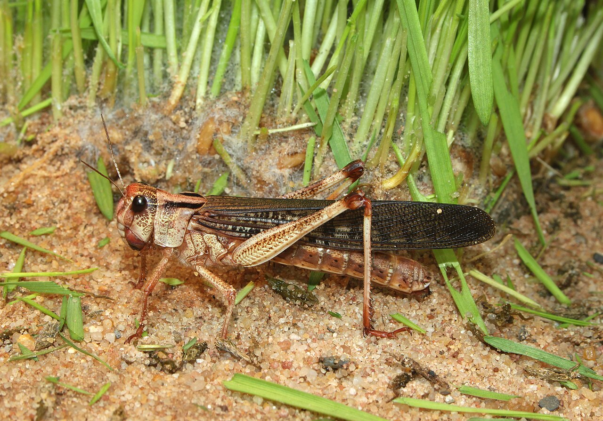

减数分裂和受精作用（下）：观察实验与受精作用
本期导读
减数分裂和受精作用（下） · 配子多样性 · 异常配子

视频原话 · 导读3 句
- 同学们好！这节课梳理人教版必修二第二章第一节的下半部分——观察实验与受精作用。8.6s
- 高考常考实验材料的选择、受精作用、配子多样性的原因和异常配子的分析。7.5s
- 我们按六个考点梳理，每个考点都讲清楚怎么考、怎么做。5.5s
观察减数分裂装片01#
- 1选材雄性个体的精巢（睾丸）
- 2原因精巢中分裂的细胞多；卵巢中细胞少，减数分裂Ⅱ在受精时才完成
- 3步骤低倍镜下找到初级、次级精母细胞和精细胞 → 换高倍镜
- 4依据染色体的形态、位置和数目
易错
装片中的细胞已死亡，看不到一个细胞连续分裂的过程，只能观察不同细胞所处的不同时期
视频原话5 句
- 考点一，观察蝗虫精母细胞减数分裂装片。材料选雄性蝗虫的精巢。7.4s
- 原因：精巢中进行减数分裂的细胞数量多；而卵巢中卵原细胞少，减数分裂Ⅱ要受精时才完成，过程不完整。11.2s
- 步骤：先在低倍镜下找到初级精母细胞、次级精母细胞和精细胞，再换高倍镜观察。8.4s
- 依据染色体的形态、位置和数目，判断细胞处于哪个时期。5.7s
- 易错：装片中的细胞已经死亡，看不到一个细胞连续分裂的动态过程，只能观察不同细胞所处的不同时期。9.6s
减数分裂模型建构02#
- 1颜色两种颜色分别代表来自父方和母方
- 2长短长短不同代表非同源染色体
- 3操作纸上画纺锤体，依次模拟联会、同源染色体分离、着丝粒分裂
考法
模拟非同源染色体自由组合，至少需要两对同源染色体；橡皮泥模型属于物理模型
视频原话4 句
- 考点二，建立减数分裂中染色体变化的模型。用橡皮泥做染色体，两种颜色分别代表来自父方和母方。10.6s
- 长短不同的代表非同源染色体；两条同样颜色、同样长短的并在一起，代表复制后的姐妹染色单体。9.7s
- 在纸上画出纺锤体，把模型摆在上面，依次模拟联会、同源染色体分离、着丝粒分裂等变化。9.2s
- 考法：模拟非同源染色体的自由组合，至少需要两对同源染色体；这是物理模型。8.1s
受精作用03#
卵细胞和精子相互识别、融合成为受精卵的过程
- 精子头部进入卵细胞
- →卵细胞膜反应阻止其他精子进入
- →两个细胞核融合
- →受精卵
染色体
一半来自精子（父方），一半来自卵细胞（母方）
细胞质
几乎全部来自卵细胞
易错
“遗传物质一半来自父方、一半来自母方”✗ —— 只有核遗传物质各占一半
视频原话4 句
- 考点三，受精作用：卵细胞和精子相互识别、融合成为受精卵的过程。7.3s
- 精子的头部进入卵细胞，卵细胞膜立即发生反应，阻止其他精子进入；然后精子的细胞核与卵细胞的细胞核融合。10.5s
- 受精卵中的染色体，一半来自精子，一半来自卵细胞，染色体数目恢复到体细胞的数目。8.4s
- 易错：受精卵中的细胞质几乎全部来自卵细胞，所以说遗传物质“一半来自父方、一半来自母方”是错的，只能说核遗传物质各一半。12.2s
减数分裂和受精意义04#
- 亲代 2n
- 减数分裂 →配子 n
- 受精作用 →受精卵 2n
- 有丝分裂 →子代 2n
- 1遗传维持每种生物前后代体细胞中染色体数目的恒定
- 2变异配子多样 ＋ 受精时随机结合 → 后代多样，适应多变的环境
易错
对遗传和变异都很重要；受精卵发育成个体靠的是有丝分裂，不是减数分裂
视频原话4 句
- 考点四，减数分裂和受精作用的意义。亲代 2n 经减数分裂产生 n 的配子，配子经受精作用形成 2n 的受精卵。11.9s
- 所以二者共同维持了每种生物前后代体细胞中染色体数目的恒定。6.5s
- 同时，减数分裂产生多样的配子，受精时配子随机结合，使后代呈现多样性，有利于适应多变的环境。10.1s
- 考法：对生物的遗传和变异都十分重要。易错：受精卵之后的个体发育靠的是有丝分裂，不是减数分裂。10.4s
配子多样性的原因05#
易错
互换发生在非姐妹染色单体之间；再加上受精时卵细胞和精子随机结合，后代更加多样
视频原话4 句
- 考点五，配子多样性的原因。第一，减数分裂Ⅰ后期，非同源染色体自由组合。两对同源染色体就有两种排列方式。12.0s
- n 对同源染色体，就能产生 2n 种配子，人有 23 对，就是 223 种。8.5s
- 第二，减数分裂Ⅰ前期，四分体中的非姐妹染色单体之间常发生互换，进一步增加了配子的种类。9.3s
- 易错：互换发生在非姐妹染色单体之间，不是姐妹染色单体；再加上受精时卵细胞和精子随机结合，后代就更加多样。11.5s
异常配子分析06#
| 个体 | 异常配子 | 另一配子 | 原因 |
|---|---|---|---|
| XXY | XY 精子（含一对同源染色体） | X 卵细胞 | 父方减Ⅰ异常 |
| XXY | XX 卵细胞 | Y 精子 | 母方减Ⅰ或减Ⅱ异常 |
| 色盲 XbXbY | XbXb 卵细胞（两条相同） | Y 精子 | 母方减Ⅱ异常 |
| XYY | YY 精子（两条相同） | X 卵细胞 | 父方减Ⅱ异常 |
第三行：色觉正常的夫妇 XBY × XBXb
解题方法
异常配子含一对同源染色体（XY、Aa）→ 减Ⅰ异常；含两条相同染色体（YY、AA）→ 减Ⅱ异常
视频原话5 句
- 考点六，异常配子分析，以 XXY 为例。父方减数分裂Ⅰ时 X 和 Y 没有分离，产生 XY 精子，与 X 卵细胞结合，得到 XXY。13.7s
- 母方减数分裂Ⅰ或减数分裂Ⅱ异常，产生 XX 卵细胞，与 Y 精子结合，也得到 XXY。8.8s
- 例：色觉正常的夫妇生了一个色盲的 X[b]X[b]Y 男孩，X[b]X[b] 只能来自母亲 X[B]X[b] 的减数分裂Ⅱ异常。12.3s
- 而 XYY 的男孩，多出来的是两条相同的 Y，来自父方的减数分裂Ⅱ异常。7.3s
- 解题方法：异常配子含一对同源染色体，比如 XY、Aa，是减数分裂Ⅰ异常；含两条相同染色体，比如 YY、AA，是减数分裂Ⅱ异常。14.8s
易错速查✓
先自己判断，再点按钮查看对错与解析。
- 1观察减数分裂应选用雌性动物的卵巢说法错误：应选雄性动物的精巢（睾丸）
- 2受精卵中的遗传物质一半来自父方，一半来自母方说法错误：核遗传物质各一半，细胞质的几乎全来自卵细胞
- 3减数分裂和受精作用维持了前后代染色体数目恒定说法正确。
- 4互换发生在四分体的姐妹染色单体之间说法错误：发生在非姐妹染色单体之间
- 5非同源染色体自由组合发生在减数分裂Ⅰ后期说法正确。
- 6XYY 个体是父方减数分裂Ⅰ异常造成的说法错误：是父方减数分裂Ⅱ异常（YY 精子）
一对同源看减Ⅰ，两条相同看减Ⅱ！
视频原话 · 易错速查5 句
- 最后，用六道判断题检验一下。3.6s
- 判断一？错，应选雄性的精巢。判断二？错，细胞质几乎都来自卵细胞。8.6s
- 判断三？对。判断四？错，是非姐妹染色单体。6.6s
- 判断五？对。判断六？错，YY 精子来自父方减数分裂Ⅱ异常。8.5s
- 六个考点串成一条线：一对同源看减Ⅰ，两条相同看减Ⅱ。我们下期再见！7.6s
图片来源
图片来源：Wikimedia Commons —— Holger Krisp《Locusta migratoria (Wanderheuschrecke)》CC BY 3.0
Photo: Holger Krisp, CC BY 3.0